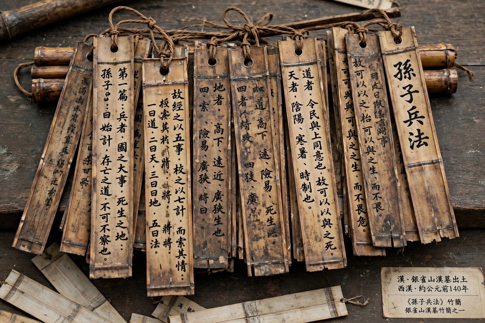

| The Art of War | |
|---|---|
| Author | Attributed to Sun Tzu (Sun Wu) |
| Language | Classical Chinese |
| Subject | Military strategy and tactics |
| Date | Traditionally 5th century BC; compiled Warring States period |
The Art of War is an ancient Chinese military treatise traditionally attributed to Sun Tzu, a high-ranking general, strategist and philosopher. Composed of 13 chapters, each devoted to an aspect of warfare, it is one of the oldest and most influential works on strategy, studied by military leaders in East Asia for over two millennia and later worldwide in military, business, legal and political contexts.

The chapters are: Laying Plans; Waging War; Attack by Stratagem; Tactical Dispositions; Energy; Weak Points and Strong; Maneuvering; Variation in Tactics; The Army on the March; Terrain; The Nine Situations; Attack by Fire; and Use of Spies. Famous precepts include that all warfare is based on deception, that supreme excellence is breaking the enemy's resistance without fighting, and injunctions to know the enemy and know yourself.
Tradition places Sun Tzu in the Spring and Autumn period as a general of Wu. Modern scholars debate whether a historical Sun Wu authored the core text or whether it accumulated during the Warring States period. A related work is attributed to his descendant Sun Bin. The earliest surviving editions include bamboo slips excavated at Yinqueshan in 1972.
The text influenced Chinese, Korean, Japanese and Vietnamese warfare, was translated into French in 1772 and into English notably by Lionel Giles (1910) and Samuel Griffith (1963), and is now widely applied beyond the military.